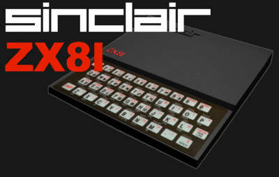

Programando toda una vida
Llevo 26 años programando, y me siento totalmente identificado con el comentario de Jeff Atwood:
For many programmers, our introduction to programming was our dad forcing us to write our own games. Instead of the shiny new Atari 2600 game console I wanted, I got a Texas Instruments TI-99/4a computer instead. That’s not exactly what I had in mind at the time, of course, but that fateful decision launched a career that spans thirty years.
En mi caso se trató de un Sinclair ZX81, yo también quería una consola Atari, pero al final eso me ayudó mucho.

Mientras algunos amigos colocaban un cartridge y se dedicaban a jugar por horas, yo tenía que copiar programas de revistas para poder jugar, y así aprendí a programar, casi por osmosis, modificando esos programas de revistas, probando, y después leyendo esos artículos donde enseñaban a usar el basic, luego el assembler, y FORTH.
Recuerdo que cuando estaba en octavo o primero medio visité el centro de computación de Codelco en Chuquicamata. Nos vimos expuestos a unos imponentes terminales IBM 3670, y me permitieron jugar al Twonky, un simple juego de texto, que se convirtió en el primer juego que programé en mi vida.
Todo esto llevó a que me dedicara a la ingeniería del software, y puedo decir con orgullo que soy libre de decidir mi destino profesional. Nunca me ha faltado el trabajo, y las oportunidades. Hay muchos de esos orgullosos chicos-atari de ayer, que lamentablemente no pueden decir lo mismo.
Hoy el OLPC-XO es como el viejo Sinclair ZX81, una oportunidad de formar desarrolladores y creadores, las otras opciones son como el Atari 2600, bonitos, entretenidos, pero no forman las capacidades que se requieren para asegurar el futuro de los niños. “No les des pescado, enséñales a pescar”, dice el viejo adagio, y nuestro país requiere eso con urgencia.
Entre los buenos programadores la cesantía es casi nula, no pasa lo mismo con otras profesiones, y actividades. No necesitamos gente que sepa usar Office, necesitamos profesionales TI, eso nos hará un país más rico y no tan dependiente como somos ahora.
En el recientemente creado consejo asesor de la presidenta no hay programadores, es una lástima, nosotros sabemos algo de como generar riqueza.